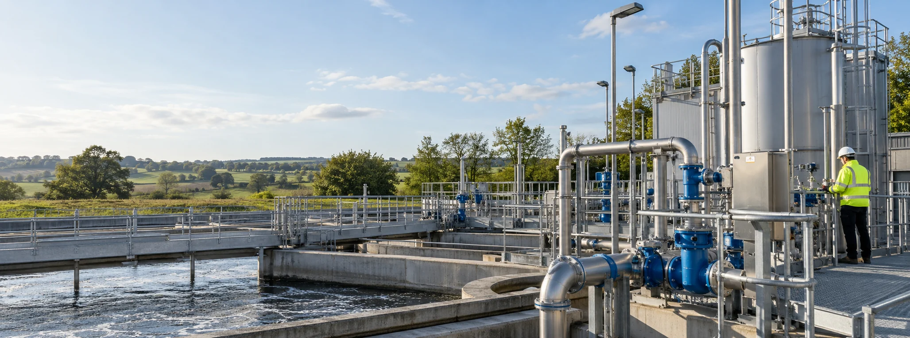

Asset management
Your assets, our responsibility.
Hand us your pump stations, tanks, interceptors and drainage. We get to know the site, plan what each asset needs and take care of it, so you don't have to.

Why asset management
One partner who knows your site.
Most problems with drainage and wastewater systems come from nobody owning them. Servicing gets missed, small faults grow and every call-out starts from scratch.
With asset management, we take that ownership. We learn how your site works, plan the work before it's needed and coordinate every visit, so things keep running and you always know where you stand.
- One point of contact for every asset
- Planned servicing, emptying and cleaning
- Repairs and remedial work arranged for you
- 24/7 emergency response when it's needed
- Clear reports after every visit
- Reminders when services are due, no pushy sales
What we can look after
Any mix of assets, on one site or many.
Pump stations
Duty and standby pumps, wet wells, floats, controls and kiosks, serviced and kept ready.
Find out more ↗Septic tanks & treatment plants
Emptying, servicing and repairs planned around how the system is used.
Find out more ↗Interceptors & gullies
Inspected, emptied and cleaned on a schedule that keeps the site compliant.
Find out more ↗Storage & process tanks
Emptying, cleaning and waste collections coordinated with your operation.
Find out more ↗Private drainage networks
Sewers, chambers and drainage runs surveyed, jetted and repaired when needed.
Find out more ↗New & adoptable assets
Pump stations and sewers looked after from commissioning through to adoption.
Find out more ↗How it works
Understand the site
We visit, map the assets, review their condition and history, and learn how your site operates.
Agree the plan
We agree what we look after, how often, and how we respond when something goes wrong.
Look after it
We coordinate every visit, deal with problems early and keep you updated with clear reports.
Telemetry
Visibility when you need it.
Telemetry is a tool we can add to any asset we manage. It shows how the asset is performing, sends alerts when something changes and collects the data behind your reports.
We use it where it genuinely helps, typically pump stations, wet wells and tanks, and leave it out where it doesn't.
- Live pump states, levels and alarms
- Early warning before small faults become call-outs
- Data to plan servicing and spot trends
- Monthly reports on how your assets are performing
- Works with many existing telemetry systems
Customer feedback
What customers say
"The Aura telemetry system has been a game changer. We receive alerts before minor issues become major ones and can see exactly how our assets are performing through the monthly reports. Since ASG started managing the site we've seen a noticeable reduction in emergency call-outs and cost!"
"We initially brought Aura Solutions in to install a pumping station, but they've since taken over the ongoing maintenance and monitoring as well. Having one company responsible for everything makes life much easier."
Common questions
What does asset management include?
Whatever your site needs. We agree which assets we look after and what each needs, then plan and coordinate the servicing, emptying, cleaning, inspections, repairs and emergency response around them.
Do I need telemetry to have asset management?
No. Telemetry is a tool we can add where it helps, to give you visibility of how an asset is performing and to collect data. Plenty of the sites we manage don't need it.
Can you take over a site from another contractor?
Yes. We start by reviewing the assets, their history and anything that needs putting right, then agree a plan for looking after them from there.
How long does an agreement last?
We agree the length with you at the start, based on the site and what's included. Ask us and we'll talk it through.
Can you look after just one asset?
Yes. Some customers start with a single pump station or tank and add more once they see how it works.
Get in touch
Tell us what needs attention.
A quick description is all we need to get started. We'll come back to you to talk it through. No pushy sales pitch, just honest advice.